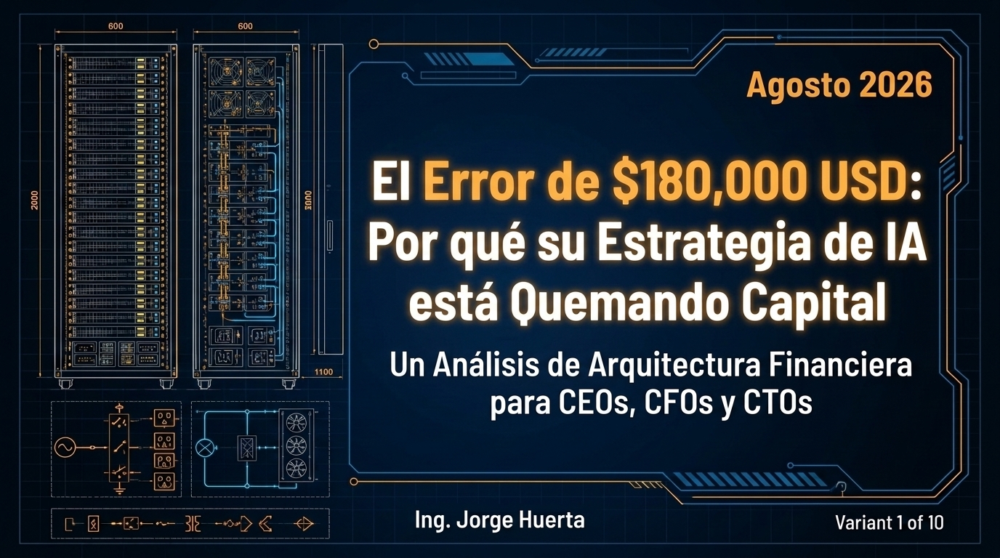

Presentación Oficial LinkedIn & GitHub
Análisis Numérico Profundo & Razonamiento Financiero (CAPEX / OPEX)
Un recorrido de alto nivel profesional por 18 láminas integrales que fusionan el Universo, la Tierra (Minerales Críticos / Tierras Raras) y la Ciencia & Tecnología DeepTech.

📝 Publicación Formato Ejecutivo para LinkedIn (< 3,000 Caracteres)
Texto optimizado para acompañar la subida del archivo PDF generado en LinkedIn:
🚀 **Razonamiento Financiero DeepTech & Modelado CAPEX/OPEX: Del Cosmos a la Tierra y la Computación Cuántica** | Por Ing. Jorge Huerta
Estimada red de CEOs, CFOs, CTOs, Investigadores y Doctores en Ciencia y Tecnología:
Tengo el honor de compartir este análisis numérico riguroso de 18 láminas ejecutivas, diseñado para evaluar la viabilidad económico-financiera y el retorno de inversión (ROI) en tecnologías de frontera.
💡 **Ejes Fundamentales de Análisis:**
1. **Universo & Espacio Estelar:** Balance financiero de la infraestructura de satélites de baja órbita y exploración profunda.
2. **La Tierra & Minerales Críticos:** Estructuración de CAPEX de refinamiento vs. OPEX logístico en Cobalto, Neodimio, Galio y Litio.
3. **Ciencia & Tecnologías Emergentes:**
- Computación Cuántica Criogénica: Amortización de criostatos mK y eficiencias de algoritmos cuánticos.
- Infraestructura de IA Soberana: TCO de clusters GPU/NPU masivos y eficiencia PUE con liquid cooling.
- ESG & Valorización de Activos Intangibles: Múltiplos EV/EBITDA en M&A de empresas DeepTech.
La convergencia entre la ciencia pura y la disciplina del capital es el catalizador indispensable para la soberanía tecnológica de la próxima década (2026-2030).
👇 **Descargue y revise el carrusel completo en PDF para profundizar en los modelos cuantitativos.**
¿Cuál es la variable de OPEX más crítica en la estrategia de su organización? Abramos el debate en los comentarios.
#DeepTech #Finance #CAPEX #OPEX #QuantumComputing #ArtificialIntelligence #RareEarths #Ingenieria #CEO #CFO #CTO #Kboxhubia #JorgeHuerta